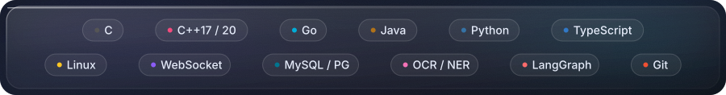
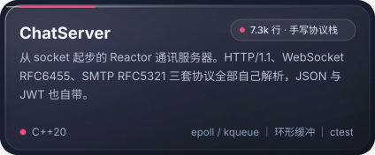
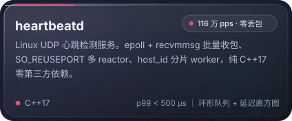
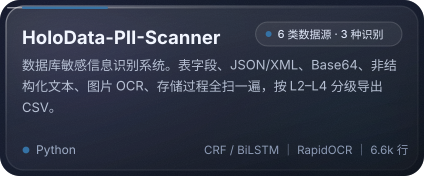
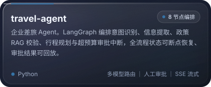

关于我
写代码的时候，我偏爱两头：一头往下，扎进 epoll、协议字节和分片队列，把机器的余量榨出来；
一头往上，做会自己判断下一步的 Agent，让它不只回答问题，而是把事办完。
中间那层花活儿我尽量少留 —— 能测量的写数字，测不出来的写边界。
- 系统与性能：C++20 服务端、Reactor 事件循环、手写协议解析、尾延迟直方图
- 数据与安全：敏感信息识别、OCR / NER 落地、数据库侧扫描
- 智能体工程：LangGraph 多节点编排、RAG 政策校验、人机协同审批
- 工程习惯：单测、压测脚本、CI 冒烟；压力测试报告里连机器型号一起写
- 正在啃：xv6 操作系统实验、Java 中间件、并发模型

精选项目
|
 |
 |
|
 |
 |
各自的难点在哪
ChatServer —— 手写三个协议栈。 core 是 EventLoop → Poller → Channel → Acceptor / TcpConnection
+ Timer，protocol 里 HTTP/1.1、WebSocket、SMTP 各自独立解析器，service 再叠用户、消息、频道、好友。
HTTP 侧要处理 Content-Length 与 Connection 语义，WebSocket 要接分片帧和关闭握手，SMTP 是完整的
会话状态机。不用 muduo 自己写一遍，才知道半包该攒在哪。
heartbeatd —— 把内核批量接口吃满。 32 字节 UDP 报文带稳定 host_id + 每次启动新生成的 boot_id
+ 递增序号，就能区分上线 / 重启 / 超时离线三种事件，不用付 TCP 握手或 ICMP 被封的代价。
4 receiver + 4 worker，loopback 压到 116 万 pps 零丢包，p99 < 500 µs；kernel_dropped
（该调 SO_RCVBUF）和 queue_dropped（该加队列或加 worker）分开计数，因为排查方向完全不同。
HoloData-PII-Scanner —— 同一条数据，五条路径。 一条身份证号可能藏在 MySQL 的 TEXT 字段、
导出的 JSON、Base64 编码的附件、一张扫描件图片，或者被拆成几段写进日志正文。七个扫描器
（结构化 / 半结构化 / 编码 / 文本 / OCR / 数据库对象 / SQL 遍历）共用一套「正则 + 校验码 → 分级」
的判定，模型用的是 CRF 与 BiLSTM-CRF，图片走 PP-OCRv4。工程上最难的是别把样本数据带出门：
仓库里连 data/、output/、logs/ 都进 .gitignore，因为扫描器自己就是最危险的泄露源。
travel-agent —— 把一次差旅拆成 8 个节点。 意图识别用便宜的小模型，推理交给大模型；
政策校验走 RAG 检索企业差旅制度；一旦超预算就中断流程等人审批，审批完从断点恢复；
前端用 SSE 把节点状态和推荐卡片流式推出来。多智能体最容易写成一锅粥，这里是靠显式状态机
（update_state + checkpointer）管住的。
上游贡献
在别人的大项目里改代码，比在自己的仓库里堆功能更能照见自己的水平边界。
Tencent/WeKnora — 开源 LLM 知识平台（Go）
| PR | 内容 | 状态 |
|---|---|---|
| #4062 | fix(retrieval)：summarize 意图不再走知识库检索 |
已合并 |
| #4306 | fix(chat)：失败的快捷问答轮次落库，刷新后错误不再丢失 |
已合并 |
| #4390 | fix(embed)：访客消息不再污染宿主上下文 |
未合并 |
open-telemetry/opentelemetry-java — OpenTelemetry Java SDK
- #8953
Include config document path in declarative config error messages把「配置哪一项为空」的报错从batch span processor exporter is required but is null变成.tracer_provider.processors[0].batch exporter is required but is null， 涉及 10 个工厂类的路径压栈与 4 个测试类改写（+358 / −167），审阅中。
GitHub 数据
其他仓库
- xv6-labs-2020 — MIT 6.S081 操作系统实验，从页表到文件系统
- fastshare — 跨设备高速文件传输平台，Spring Boot 3 + Vue 3 + WebSocket
- TestForge-agent — 自然语言驱动的 Web QA Agent，Playwright 多 Agent 协作
- toolbox — JavaSE 命令行工具箱，IO / 多线程 / 网络 / 设计模式的练习场
- java_web — Java Web 与 Spring Cloud 微服务练习
未公开：个人博客系统（Next.js 15 + Spring Boot 3.2，前后端分离，含文章编辑、归档、后台管理）， 因为配置里带密钥，仓库暂时私有。